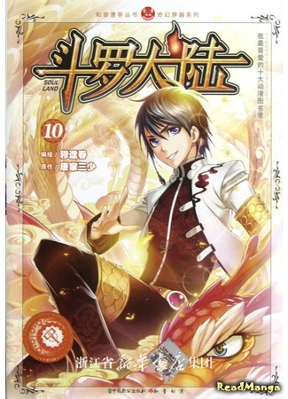

|  |
Описание:Клан Тан – одна из самых известных школ боевых искусств. Тан Сань, украв одно из секретных учений клана, совершает страшное преступление. Понимая тяжесть содеянного, он прыгает с горы, известной как «Пик Ада». Но он и подумать не мог, что попадет в другой мир, где нет боевых искусств, мир, где всё решают духи – континент Доуло. Как Тан Сань выживет в этой неизвестной среде? Чтобы следовать иной дорогой, новая легенда начинается… |
|